Опис предметного середовища
Тема: Створення веб-сайту для автосервісу "Gulf Motors".
Мета проєкту:
Забезпечити зручний спосіб взаємодії клієнта та автосервісу. Це включає он-лайн запис, доступ до списку послуг та їх вартість.
Сценарій використання сайту для клієнтів:
- Клієнт переглядає інформацію про автосервіс. Клієнт переглядає інформацію про послуги. Клієнт вивчає ціни на дані послуги. Клієнт робить запис на конкретну послугу.
Тема: Структура HTML-документа. Вибір предметної галузі.
робота з посиланнями, таблицями, зображеннями, списками в html-документі.
Мета: придбати практичні навички роботи з HTML-документом, таблицями, зображеннями, посиланнями, списками, формами
Створити шаблон звітного HTML-документом для відображення результатів роботи всіх лабораторних робіт.
Посилання на живу веб-сторінку
Посилання на веб-сторінку
Посилання на живу сторінку звітного HTML документа
Посилання на сторінку звітного HTML документа
Посилання на живу сторінку з самостійними роботами
Посилання на сторінку з самостійними роботами
СТРУКТУРА ДОКУМЕНТА
<!DOCTYPE html>
<html lang="uk">
<head>
<meta charset="UTF-8">
<meta name="viewport" content="width=device-width, initial-scale=1.0">
<title>Головна сторінка.</title>
</head>
<body>
<main>
<section>
<h2>Зображення</h2>
<img src="Gulf Motors.jpg" alt="Логотип автосервісу" width="300" height="100">
</section>
<section>
<h2>Таблиця</h2>
<table>
<tr>
<th>Послуга</th>
<th>Ціна (грн)</th>
<th>Опис</th>
</tr>
<tr>
<td>Діагностика</td>
<td>1200 грн</td>
<td>Повна діагностика автомобіля з використанням сучасного обладнання.</td>
</tr>
<tr>
<td>Заміна масла</td>
<td>500 грн</td>
<td>Швидка та якісна заміна масла для будь-яких видів авто.</td>
</tr>
<tr>
<td>Ремонт двигуна</td>
<td>від 2000 грн</td>
<td>Професійний ремонт двигунів всіх видів.</td>
</tr>
</table>
</section>
<section>
<h2>Списки (нумеровані, маркіровані)</h2>
<h3>Переваги автосервісу "Gulf Motors"</h3>
<ul>
<li>Досвідчені механіки</li>
<li>Сучасне обладнання</li>
<li>Гарантія на всі види робіт</li>
</ul>
<h3>Етапи обслуговування</h3>
<ol>
<li>Попередній запис на обслуговування</li>
<li>Проведення діагностики</li>
<li>Погодження робіт та розрахунок вартості</li>
<li>Ремонт або обслуговування автомобіля</li>
<li>Завершення та видача автомобіля клієнту</li>
</ol>
</section>
</main>
</body>
</html>
HTML-код таблиці
<table>
<tr>
<th>Послуга</th>
<th>Ціна (грн)</th>
<th>Опис</th>
</tr>
<tr>
<td>Діагностика</td>
<td>1200 грн</td>
<td>Повна діагностика автомобіля з використанням сучасного обладнання.</td>
</tr>
<tr>
<td>Заміна масла</td>
<td>500 грн</td>
<td>Швидка та якісна заміна масла для будь-яких видів авто.</td>
</tr>
<tr>
<td>Ремонт двигуна</td>
<td>від 2000 грн</td>
<td>Професійний ремонт двигунів всіх видів.</td>
</tr>
</table>
Скріншот таблиці

Теорія про теги та атрибути, що застосовуються при створенні таблиць
Таблиці в HTML використовуються для організації даних у рядках і стовпцях. Основні теги для створення таблиць:
- <table>: Цей тег визначає саму таблицю.
- <tr>: Тег рядка таблиці. Використовується для створення нових рядків.
- <th>: Тег заголовка стовпця. Використовується для створення заголовків у таблиці. Заголовки за замовчуванням жирні і вирівняні по центру.
- <td>: Тег комірки таблиці. Використовується для заповнення даними комірок таблиці.
- Атрибути:
- colspan: Визначає кількість стовпців, які повинні бути об'єднані в одній комірці.
- rowspan: Визначає кількість рядків, які повинні бути об'єднані в одній комірці.
- border: Визначає товщину рамки таблиці.
- cellpadding: Визначає внутрішній відступ у комірках таблиці.
- cellspacing: Визначає відстань між комірками таблиці.
Приклад створення таблиці з об'єднанням комірок:
<table border="1">
<tr>
<th colspan="2">Послуга</th>
</tr>
<tr>
<td rowspan="2">Заміна масла</td>
<td>500 грн</td>
</tr>
<tr>
<td>Швидка та якісна заміна масла для будь-яких видів авто</td>
</tr>
</table>
HTML-код зображення
<section>
<h2>Зображення</h2>
<img src="Gulf Motors.jpg" alt="Зображення логотипу автосервісу" width="300" height="100">
</section>
Скріншот зображення

Теорія про атрибути тегу <img>
Тег <img> використовується для вставки зображень на веб-сторінку. Основні атрибути, що використовуються з цим тегом:
- src: Визначає шлях до зображення. Це обов'язковий атрибут.
- alt: Описує зображення. Використовується для доступності (наприклад, для користувачів з обмеженими можливостями) і з'являється, якщо зображення не може бути завантажене. Це обов'язковий атрибут.
- width: Визначає ширину зображення в пікселях або у відсотках. Може бути використаний для масштабування зображення.
- height: Визначає висоту зображення в пікселях або у відсотках. Може бути використаний для масштабування зображення.
- title: Показує підказку, яка з'являється, коли курсор миші наводиться на зображення.
Приклад використання атрибутів:
<img src="example.jpg" alt="Приклад зображення" width="450" height="150" title="Це приклад зображення">
HTML-код списків
<section>
<h2>Списки (нумеровані, маркіровані)</h2>
<h3>Переваги автосервісу "Gulf Motors"</h3>
<ul>
<li>Досвідчені механіки</li>
<li>Сучасне обладнання</li>
<li>Гарантія на всі види робіт</li>
</ul>
<h3>Етапи обслуговування</h3>
<ol>
<li>Попередній запис на обслуговування</li>
<li>Проведення діагностики</li>
<li>Погодження робіт та розрахунок вартості</li>
<li>Ремонт або обслуговування автомобіля</li>
<li>Завершення та видача автомобіля клієнту</li>
</ol>
</section>
Скріншот списків

Теорія про теги та атрибути списків
HTML підтримує два основні типи списків:
- Маркіровані списки (<ul>): використовуються для списків без порядкових номерів. Кожен елемент позначається тегом <li> і відображається з маркером за замовчуванням.
- Нумеровані списки (<ol>): використовуються для упорядкованих списків з номерами. Кожен елемент також позначається тегом <li>, а елементи автоматично нумеруються.
Основні атрибути списків:
- type: атрибут для <ol>, який дозволяє змінювати тип нумерації (наприклад, "1" для числового, "A" для алфавітного).
- start: для <ol> встановлює початковий номер нумерації.
- reversed: атрибут для <ol>, який дозволяє показувати нумерацію в зворотному порядку.
Висновок
Виконання лабораторної роботи дало базові знання для створення структурованих веб-сторінок із зручною навігацією та привабливим дизайном, що відповідають сучасним стандартам. У процесі роботи було розроблено шаблон HTML-документа для звітів, який стане основою для подальшого представлення результатів усіх лабораторних робіт.
Вивчивши структуру HTML-документа, було освоєно налаштування основних елементів, таких як заголовок, метадані, контентні секції та футер. Закріплення навичок роботи з тегами : table, img, a, ul, ol, li та form та їхніми атрибутами дозволило створити більш інформативні та структуровані веб-сторінки.
Отже, виконана лабораторна робота стала основою для подальшого розвитку навичок веб-розробки, закріпила знання про роботу з HTML-документом, таблицями, зображеннями, посиланнями, списками та формами, а також допомогла набути практичний досвід для розробки складніших веб-інтерфейсів.
Тема:КАСКАДНІ ТАБЛИЦІ СТИЛІВ. СЕЛЕКТОРИ .ІДЕНТИФІКАТОРИ. СТИЛЬОВЕ ОФОРМЛЕННЯ
ТЕКСТОВИХ ЕЛЕМЕНТІВ В HTML-ДОКУМЕНТАХ.
Мета:придбати практичні навички роботи з селекторами: тегів, класів,
ідентифікаторів; списками, різноманітними властивостями
кольору і фону, оформленням текстових елементів/
Посилання на живу веб-сторінку
Посилання на веб-сторінку
Посилання на живу сторінку звітного HTML документа
Посилання на сторінку звітного HTML документа
Посилання на живу сторінку з самостійними роботами
Посилання на сторінку з самостійними роботами
Способи підключення стилів
1. Вбудовані стилі
Стилі додаються безпосередньо до HTML-елемента через атрибут style.
<h1 style="color: green; font-size: 18px;">Текст із вбудованим стилем</h1>
2. Внутрішні стилі
Внутрішні стилі додаються в документ за допомогою блоку <style> у секції
<head>.
<head>
<style>
h1 {
color: green;
font-size: 18px;
}
</style>
</head>
<body>
<h1>Текст із внутрішнім стилем</h1>
</body>
3. Зовнішні стилі
Зовнішні стилі підключаються через окремий CSS-файл за допомогою тега <link> у
секції
<head>. Це найпоширеніший спосіб, який дозволяє розділити HTML і CSS-код.
<head>
<link rel="stylesheet" href="styles.css">
</head>
<body>
<h1>Текст із зовнішнім стилем</h1>
</body>
4. Підключення за допомогою @import
Правило @import дозволяє підключати один або більше зовнішніх CSS-файлів у головному
CSS-файлі.
/* Вміст файлу main.css */
@import url("styles.css");
h1 {
color: black;
}
Селектори
Цей фрагмент показує застосування CSS-селекторів для вибору елементів на веб-сторінці.
Селектор за тегом
Вибирає всі елементи з певним тегом. Наприклад, div вибирає всі блоки.
<div>Текст блоку</div>
Селектор за класом
Вибирає всі елементи з певним класом. Наприклад, .highlight вибирає всі елементи з класом "highlight".
<div class="highlight">Текст</div>
Селектор за ідентифікатором
Вибирає елемент за його унікальним ідентифікатором. Наприклад, #header вибирає елемент з id "header".
<div id="header">Заголовок</div>
Селектор за атрибутом
Вибирає елементи, що мають певний атрибут або його значення. Наприклад, [href="#"] вибирає всі елементи з атрибутом href="#".
<a href="#">Посилання</a>
Комбінація селекторів
Ви можете комбінувати селектори для більш точного вибору елементів, наприклад, section.highlight a вибирає всі посилання всередині елементів з класом "highlight".
<section class="highlight"><a href="#">Посилання</a></section>
Селектор тегу
У цьому прикладі ми використовуємо селектор тегу <h1>, щоб застосувати стилі
до заголовка.
HTML-код:
<header>
<h1>Gulf Motors</h1>
</div>
</header>
CSS-код:
/* Стиль для тегу header */
header {
background-color: #000;
color: #ffa500;
text-align: center;
padding: 1.5rem 1rem;
}
Результат у браузері:

Селектор класу
У цьому прикладі ми використовуємо селектор класу .address-block, щоб стилізувати
блок адреси у
нашому веб-застосунку.
HTML-код:
<div class="address-block">
<h3>Наша адреса</h3>
<p>М. Київ, Проспект Лобановського 5ж</p>
</div>
</div>
CSS-код:
/* Стилі для блоку з адресою */
.address-block {
text-align: center;
background-color: #333;
color: #ffa500;
padding: 1.5rem;
border-radius: 10px;
box-shadow: 0 4px 8px rgba(0, 0, 0, 0.2);
margin-top: 2rem;
}
.address-block h3 {
font-size: 1.8rem;
margin-bottom: 1rem;
}
.address-block p {
font-size: 1.2rem;
}
Результат у браузері:

У цьому прикладі ми використовуємо селектор ідентифікатора #contact-info, щоб
стилізувати форму
контактів у нашому веб-застосунку.
HTML код
<div class="#contact-info">
<h3>Контакти</h3>
<p>Телефон: 0505671718</p>
<p>Телефон: 0939729660</p>
</div>
</div>
CSS код
#contact-info {
text-align: center;
background-color: #fff;
padding: 1rem;
border-radius: 10px;
box-shadow: 0 4px 8px rgba(0, 0, 0, 0.2);
}
#contact-info h3 {
color: #000;
}
#contact-info p {
font-size: 1.2rem;
color: #555;
}
У браузері блок з контактами виглядатиме так:

Інші селектори
У цьому прикладі ми застосуємо різні типи CSS-селекторів, такі як сусідні, дочірні селектори,
селектор атрибута
та універсальний селектор.
1. Сусідні селектори
Сусідні селектори дозволяють вибирати елементи, які йдуть безпосередньо після іншого елемента.
h1 + p {
color: red;
}
У цьому прикладі цей код зробить червоним текст усіх p, які одразу слідують за h1.
2. Дочірні селектори
Дочірні селектори дозволяють вибирати елементи, які є прямими нащадками іншого елемента.
nav > a {
text-decoration: none;
}
У цьому прикладі цей код прибирає підкреслення лише у a, які є прямими дітьми nav.
3. Селектор атрибута
Селектор атрибута дозволяє вибирати елементи за значенням їх атрибута.
#contact-form input:focus {
border-color: #333;
}
У цьому прикладі цей селектор стилізує input, коли він у стані :focus (користувач взаємодіє з ним).
4. Універсальний селектор
Універсальний селектор вибирає всі елементи на сторінці.
* {
margin: 0;
padding: 0;
}
Цей код скидає всі відступи (внутрішні та зовнішні) для всіх елементів.
Шрифти Google Fonts
У цьому прикладі ми підключаємо шрифт Roboto та sans-serif за допомогою Google Fonts.

CSS: Шрифти Текст Таблиці Фон CSS Просунутий
1. Шрифти
Для стилізації тексту на сайті ми використовуємо шрифт Roboto та sans-serif з Google Fonts.
<link href=""https://fonts.googleapis.com/css2?family=Roboto:wght@400;700&family=Open+Sans:wght@400;600&display=swap" rel="stylesheet">" rel="stylesheet">
/* Основні стилі */
body {
font-family: 'Open Sans', sans-serif;
margin: 0;
padding: 0;
background-color: #ffe4b5;
color: #333;
line-height: 1.6;
}
/* Шапка */
header {
background-color: #000;
color: #ffa500;
text-align: center;
padding: 1.5rem 1rem;
}
header h1 {
margin: 0;
font-size: 2.8rem;
font-family: 'Roboto', sans-serif;
}
2. Контури
Контури додаються до елементів за допомогою властивості text-shadow для тексту і
box-shadow для контейнерів.
h1 {
text-shadow: 2px 2px 5px rgba(0, 0, 0, 0.3);
}
.content-section {
box-shadow: 0 4px 10px rgba(0, 0, 0, 0.1);
}
3. Фон
Фон для елементів може бути однотонним або градієнтним. Ось приклад однотонного фону:
body {
background-color: #87CEEB; /* Світло-блакитний фон */
margin: 0;
padding: 0;
}
4. Колір тексту
Для зміни кольору тексту використовуються властивості color.
Приклад:
body {
color: #333;
}
header {
color: #ffa500;
}
nav a {
color: #ffa500;
}
5. CSS-властивості для таблиць
Таблиці можна стилізувати за допомогою CSS, додаючи контури, відступи та змінюючи кольори фону.
table {
width: 100%;
border-collapse: collapse;
margin: 1rem 0;
}
table th, table td {
border: 1px solid #ddd;
padding: 0.8rem;
text-align: center;
}
table th {
background-color: #ffa500;
color: #000;
}
table tr:nth-child(even) {
background-color: #f9f9f9;
}
table tr:hover {
background-color: #f1f1f1;
}
6. Багаторівневі списки
ul ul {
margin-left: 20px;
list-style-type: circle;
}
7. CSS Просунутий
Просунуте використання CSS включає застосування анімацій, псевдокласів та псевдоелементів. Ось
приклад анімації:
/* Основний стиль кнопки */
.animated-button {
background-color: #ffa500;
color: #fff;
padding: 10px 20px;
font-size: 16px;
border: none;
border-radius: 5px;
cursor: pointer;
transition: transform 0.3s ease, background-color 0.3s ease;
}
/* Анімація при наведенні */
.animated-button:hover {
background-color: #ff5722; /* Зміна кольору */
transform: scale(1.1); /* Збільшення */
}
/* Додатковий ефект натискання */
.animated-button:active {
transform: scale(0.95); /* Зменшення при натисканні */
}
Приклад таблиці
| № |
Назва |
Опис |
Ціна (грн) |
| 1 |
Діагностика |
Повна діагностика авто |
1200 |
| 2 |
Заміна масла |
Швидка і якісна заміна |
500 |
| 3 |
Ремонт двигуна |
Ремонт будь-якої складності |
від 2000 |
Приклад багаторівневого списку
- Компанія "ТехноСвіт"
- Відділ розробки
- Проектування програмного забезпечення
- Тестування програмних продуктів
- Відділ маркетингу
- Розробка рекламних кампаній
- Дослідження ринку
- Партнери
- Локальні компанії
- Міжнародні партнери
- "TechGlobal"
- "Innovative Solutions"
- Контакти
- Головний офіс: Київ, вул. Наукова, 15
- Філії
Висновки
У ході виконання завдання було здобуто практичні навички роботи з каскадними таблицями стилів (CSS) для оформлення веб-сторінок на основі HTML. Розглянуто та реалізовано такі способи застосування стилів:
- Вбудовані стилі (inline styles) – використовуються для одноразового застосування форматування до конкретних елементів.
- Внутрішні стилі (internal styles) – підходять для налаштування окремих сторінок.
- Зовнішні стилі (external styles) – ефективні для підтримки та структурування великих веб-проєктів.
- Метод
@import – дозволяє підключати додаткові файли стилів.
Вивчено принципи використання різних типів селекторів: елементів, класів, ID, атрибутів, вкладених і суміжних елементів.
Крім того, застосовано численні властивості CSS для оформлення текстів, списків, фонів і створення інтерактивних елементів. Висновок: використання CSS відкриває можливості для створення естетично привабливих, функціональних і зручних веб-сторінок.
Контрольні питання
1. Для чого використовуються каскадні таблиці стилів?
Каскадні таблиці стилів (CSS) використовуються для оформлення та стилізації веб-сторінок, створюючи привабливий і зручний для користувача дизайн. Вони дозволяють задавати кольори, шрифти, розміри, відступи, а також створювати складні макети сторінок. CSS забезпечує розділення структури HTML-коду та його стилістичного оформлення, що спрощує підтримку і розвиток веб-проєктів.
2. Які методи визначення стилів у HTML-документі ви знаєте?
- Вбудовані стилі (inline styles) – стилі, які задаються безпосередньо в атрибуті style елемента HTML. Вони застосовуються до окремих елементів і використовуються для швидкого форматування.
- Внутрішні стилі (internal styles) – стилі, які визначаються в секції style всередині HTML-документа, зазвичай у частині head. Вони використовуються для форматування елементів на певній сторінці.
- Зовнішні стилі (external styles) – стилі, що зберігаються в окремих CSS-файлах і підключаються до HTML-документа через тег link. Це найбільш зручний і ефективний спосіб організації стилів для великих веб-проєктів.
3. У чому різниця між принципами каскадування і спадкування?
Принцип каскадування визначає, який стиль застосовувати, коли до елемента одночасно застосовуються кілька стилів з різних джерел (вбудовані, внутрішні або зовнішні стилі). Спадкування описує процес передачі стилів від батьківських елементів до нащадків, де дочірні елементи автоматично отримують деякі стилі від батьків. Різниця між ними полягає в тому, що каскадування визначає порядок пріоритетів, а спадкування — це процес передачі властивостей між елементами.
4. Як в HTML-документі оформлюються селектори тегу і класу?
В HTML-документі селектор тегу оформлюється за допомогою назви тегу, наприклад, p {} для всіх елементів p, а селектор класу — за допомогою крапки перед назвою класу, наприклад, .button {} для елементів з класом button.
Селектор тегу: Оформлюється через назву тега, наприклад:
p {
color: red;
}
Селектор класу: Починається з крапки і застосовується до елементів з відповідним
атрибутом
class:
.card {
background-color: lightgray;
}
5. Для чого використовується ідентифікатор?
Ідентифікатор (ID) використовується для унікальної ідентифікації елемента на сторінці, що дозволяє застосовувати стилі або маніпулювати ним через JavaScript. Кожен ID має бути унікальним на сторінці, що дозволяє чітко визначити конкретний елемент.
6. Навести приклади оформлення текстових елементів
Приклади стилізації тексту:
p {
color: red;
font-size: 16px;
}
h1 {
font-weight: bold;
font-style: italic;
}
p {
line-height: 1.5;
text-align: center;
}
Тема:ВЕРСТКА HTML-ДОКУМЕНТУ. БЛОКОВА ВЕРСТКА. ВЕРСТКА ЗАСОБАМИ CSS та FLEXBOX.
Мета:⎯ придбати практичні навички роботи верстки сторінок засобами CSS,
верстки на основі
плаваючих елементів, з’ясувати
переваги та недоліки типів макетів веб-сторінок
⎯ придбати практичні навички роботи верстки сторінок засобами CSS та FLEXBOX
Посилання на живу веб-сторінку
Посилання на веб-сторінку
Посилання на живу сторінку звітного HTML документа
Посилання на сторінку звітного HTML документа
Посилання на живу сторінку з самостійними роботами
Посилання на сторінку з самостійними роботами
Опис особливостей макету
1. Блокова гумова верстка
Макет побудований за принципом блокової верстки, де основні елементи, такі як
header,
section,
footer, розташовані у вигляді окремих блоків. Їх
розміри
змінюються відповідно до ширини екрану, що є ознакою гумової верстки.
/* Приклад гумової верстки */
main {
padding: 2rem;
max-width: 1200px;
margin: 0 auto;
}
2. Використання Flexbox
У макеті активно використовується Flexbox для вирівнювання елементів.
/* У формі запису */
#contact-form form {
display: flex;
flex-direction: column;
align-items: center;
}
/* У каруселі з зображеннями */
#carousel div {
display: flex;
transition: transform 0.5s ease;
}
/* У меню послуг */
.service-grid {
display: flex;
flex-wrap: wrap;
justify-content: space-between;
}
Висновок
У цьому коді використовується гумова блокова верстка. Це забезпечує адаптацію макета до різних розмірів екранів, роблячи сайт зручним для перегляду як на великих моніторах, так і на мобільних пристроях.
Скріншот головної сторінки:

;

;

;

;

;
Код html документу:
</head>
<body>
<!-- Шапка -->
<header>
<h1>Gulf Motors</h1>
<p>Автосервіс преміум-класу для вашого авто</p>
</header>
<!-- Навігація -->
<nav>
<a href="#services">Наші послуги</a>
<a href="#about">Про нас</a>
<a href="#contact-form">Запис на обслуговування</a>
<a href="#contact-info">Контакти</a>
</nav>
<!-- Головна -->
<main>
<!-- Опис -->
<section id="about">
<h2>Про Gulf Motors</h2>
<img src="Gulf Motors.jpg" alt="Фото Gulf Motors" id="about-image">
<p>
Gulf Motors — ваш надійний партнер у світі автообслуговування. Ми пропонуємо повний спектр послуг із технічного обслуговування, діагностики та ремонту автомобілів.
Завдяки нашій професійній команді та сучасному обладнанню, ми гарантуємо високу якість робіт, прозорі ціни та максимальний комфорт для клієнтів.
</p>
<!-- Карусель -->
<div id="carousel">
<div>
<img src="GULF Service.jpg" alt="Фото 1">
<img src="GULF Service 2.jpg" alt="Фото 2">
<img src="GULF Service 3.jpg" alt="Фото 3">
<img src="GULF Service 4.jpg" alt="Фото 4">
</div>
</div>
</section>
<!-- Таблиця -->
<section id="services">
<h2>Наші послуги</h2>
<table>
<tr>
<th>Послуга</th>
<th>Ціна (грн)</th>
<th>Опис</th>
</tr>
<tr>
<td>Діагностика</td>
<td>1200</td>
<td>Повна діагностика авто за допомогою сучасного обладнання.</td>
</tr>
<tr>
<td>Заміна масла</td>
<td>500</td>
<td>Швидка і якісна заміна масла.</td>
</tr>
<tr>
<td>Ремонт двигуна</td>
<td>від 2000</td>
<td>Ремонт двигунів будь-якої складності.</td>
</tr>
</table>
</section>
<!-- Форма -->
<section id="contact-form">
<h2>Запис на обслуговування</h2>
<form action="/submit" method="post">
<label for="name">Ваше ім'я:</label>
<input type="text" id="name" name="name" placeholder="Введіть ваше ім'я" required>
<label for="phone">Номер телефону:</label>
<input type="tel" id="phone" name="phone" placeholder="+380123456789" required>
<label for="service">Оберіть послугу:</label>
<select id="service" name="service">
<option value="diagnostic">Діагностика</option>
<option value="oil_change">Заміна масла</option>
<option value="engine_repair">Ремонт двигуна</option>
</select>
<button type="submit">Записатися</button>
</form>
</section>
<!-- Контактна інформація -->
<section id="contact-info">
<h3>Контакти</h3>
<p>Телефон: 0505671718</p>
<p>Телефон: 0939729660</p>
</section>
<!-- Адреса -->
<section id="address">
<h3>Наша адреса</h3>
<p>М. Київ, Проспект Лобановського 5ж</p>
</section>
</main>
Код CSS:
/* Основні стилі */
body {
font-family: 'Arial', sans-serif;
margin: 0;
padding: 0;
background-color: #ffe4b5;
color: #333;
line-height: 1.6;
}
/* Шапка */
header {
background-color: #000;
color: #ffa500;
text-align: center;
padding: 1.5rem 1rem;
}
header h1 {
margin: 0;
font-size: 2.8rem;
}
header p {
font-size: 1.2rem;
margin: 0.5rem 0 0;
}
/* Навігаційне меню */
nav {
background-color: #333;
padding: 0.5rem;
text-align: center;
position: sticky;
top: 0;
z-index: 1000;
}
nav a {
color: #ffa500;
text-decoration: none;
margin: 0 1rem;
font-size: 1.2rem;
padding: 0.5rem 1rem;
border-radius: 5px;
transition: background-color 0.3s ease;
}
nav a:hover {
background-color: #ffa500;
color: #000;
}
main {
padding: 2rem;
max-width: 1200px;
margin: 0 auto;
}
h2 {
text-align: center;
color: #000;
}
section {
margin-bottom: 2rem;
padding: 1.5rem;
background-color: #fff;
border-radius: 10px;
box-shadow: 0 4px 8px rgba(0, 0, 0, 0.2);
}
/* Таблиця послуг */
table {
width: 100%;
border-collapse: collapse;
margin: 1rem 0;
}
table th, table td {
border: 1px solid #ddd;
padding: 0.8rem;
text-align: center;
}
table th {
background-color: #ffa500;
color: #000;
font-weight: bold;
}
table tr:nth-child(even) {
background-color: #f9f9f9;
}
table tr:hover {
background-color: #f1f1f1;
}
/* Форма запису */
#contact-form form {
display: flex;
flex-direction: column;
align-items: center;
}
#contact-form label {
margin: 1rem 0 0.5rem;
font-size: 1.1rem;
}
#contact-form input,
#contact-form select,
#contact-form button {
width: 80%;
max-width: 400px;
padding: 0.8rem;
margin-bottom: 1rem;
border: 2px solid #ffa500;
border-radius: 5px;
font-size: 1rem;
}
#contact-form input:focus,
#contact-form select:focus {
border-color: #333;
outline: none;
}
#contact-form button {
background-color: #ffa500;
color: #fff;
font-weight: bold;
cursor: pointer;
transition: background-color 0.3s ease;
}
#contact-form button:hover {
background-color: #333;
color: #ffa500;
}
/* Контактна інформація */
#contact-info {
text-align: center;
background-color: #fff;
padding: 1rem;
border-radius: 10px;
box-shadow: 0 4px 8px rgba(0, 0, 0, 0.2);
}
#contact-info h3 {
color: #000;
}
#contact-info p {
font-size: 1.2rem;
color: #555;
}
/* Карусель */
#carousel {
display: flex;
overflow: hidden;
max-width: 100%;
border-radius: 10px;
box-shadow: 0 4px 8px rgba(0, 0, 0, 0.2);
margin-top: 1rem;
}
#carousel div {
display: flex;
transition: transform 0.5s ease;
}
#carousel img {
width: 100%;
max-width: 300px;
}
/* Блок з адресою */
#address {
text-align: center;
background-color: #333;
color: #ffa500;
padding: 1.5rem;
border-radius: 10px;
box-shadow: 0 4px 8px rgba(0, 0, 0, 0.2);
margin-top: 2rem;
}
#address h3 {
font-size: 1.8rem;
margin-bottom: 1rem;
}
#address p {
font-size: 1.2rem;
}
/* Стилі для зображення */
#about-image {
display: block;
margin: 1.5rem auto;
width: 50%;
max-width: 300px;
height: auto;
border-radius: 15px; /* Заокруглені кути */
}
Завдання 2.Варіант 2.Засобами HTML та CSS виконати Завдання №2, в саме: створити окремі веб-сторінки, а саме:
• Розмітку за допомогою таблиці (номер варіанта – остання цифра у списку групи)
o Фіксована таблична верстка
o Гумова таблична верстка
• Розмітку за допомогою блоків (плаваючих елементів) (номер варіанта – остання цифра у списку групи + 1)
o Фіксована блокова верстка
o Гумова блокова верстка
1.1 Фіксована таблична верстка
<!DOCTYPE html>
<html lang="uk">
<head>
<meta charset="UTF-8">
<meta name="viewport" content="width=device-width, initial-scale=1.0">
<title>Фіксована таблична верстка</title>
<style>
table {
width: 600px; /* Фіксована ширина */
margin: 0 auto;
border-collapse: collapse;
}
th, td {
border: 1px solid #be2a2a;
padding: 10px;
text-align: center;
}
th {
background-color: #dbd3d3;
}
</style>
</head>
<body>
<h1>Таблиця з фіксованою шириною</h1>
<table>
<tr>
<th>№</th>
<th>Назва</th>
<th>Ціна</th>
</tr>
<tr>
<td>1</td>
<td>Товар</td>
<td>55 грн</td>
</tr>
<tr>
<td>2</td>
<td>Товар</td>
<td>78 грн</td>
</tr>
<tr>
<td>3</td>
<td>Товар</td>
<td>15 грн</td>
</tr>
<tr>
<td>4</td>
<td>Товар</td>
<td>65 грн</td>
</tr>
</table>
</body>
</html>
1.2 Гумова таблична верстка
<!DOCTYPE html>
<html lang="uk">
<head>
<meta charset="UTF-8">
<meta name="viewport" content="width=device-width, initial-scale=1.0">
<title>Гумова таблична верстка</title>
<style>
table {
width: 70%; /* Ширина таблиці автоматично пристосовується до екрану */
border-collapse: collapse;
}
th, td {
border: 1px solid #2da81f;
padding: 10px;
text-align: center;
}
th {
background-color: #b01a1a;
}
</style>
</head>
<body>
<h1>Гумова таблична верстка</h1>
<table>
<tr>
<th>№</th>
<th>Назва</th>
<th>Ціна</th>
</tr>
<tr>
<td>1</td>
<td>Товар</td>
<td>55 грн</td>
</tr>
<tr>
<td>2</td>
<td>Товар</td>
<td>78 грн</td>
</tr>
<tr>
<td>3</td>
<td>Товар</td>
<td>15 грн</td>
</tr>
<tr>
<td>4</td>
<td>Товар</td>
<td>65 грн</td>
</tr>
</table>
</body>
</html>
2.1 Фіксована блокова верстка
<!DOCTYPE html>
<html lang="uk">
<head>
<meta charset="UTF-8">
<meta name="viewport" content="width=device-width, initial-scale=1.0">
<title>Фіксована блокова верстка</title>
<style>
.container {
width: 600px; /* Фіксована ширина */
margin: 0 auto;
display: flex;
justify-content: space-between;
}
.box {
width: 20%;
height: 200px;
background-color: #6b2ba2;
text-align: center;
padding: 20px;
box-sizing: border-box;
}
</style>
</head>
<body>
<h1>Фіксовані блоки</h1>
<div class="container">
<div class="box">Блок 1</div>
<div class="box">Блок 2</div>
<div class="box">Блок 3</div>
<div class="box">Блок 4</div>
</div>
</body>
</html>
2.2 Гумова блокова верстка
<!DOCTYPE html>
<html lang="uk">
<head>
<meta charset="UTF-8">
<meta name="viewport" content="width=device-width, initial-scale=1.0">
<title>Гумова блокова верстка</title>
<style>
.container {
width: 70%; /* Ширина контейнера адаптується до екрану */
display: flex;
justify-content: space-between;
flex-wrap: wrap;
}
.box {
width: 20%;
height: 200px;
background-color: #107a90;
text-align: center;
padding: 20px;
box-sizing: border-box;
margin-bottom: 20px;
}
</style>
</head>
<body>
<h1>Гумові блоки</h1>
<div class="container">
<div class="box">Блок 1</div>
<div class="box">Блок 2</div>
<div class="box">Блок 3</div>
<div class="box">Блок 4</div>
</div>
</body>
</html>
Завдання 2. Варіант 3
<!DOCTYPE html>
<html lang="uk">
<head>
<meta charset="UTF-8">
<meta name="viewport" content="width=device-width, initial-scale=1.0">
<title>Макет: Варіант 2</title>
<style>
body {
margin: 0;
font-family: Arial, sans-serif;
}
.container {
width: 100%;
max-width: 1200px;
margin: 0 auto;
overflow: hidden; /* Забезпечує коректне відображення плаваючих блоків */
}
/* Верхній блок */
.header {
background-color: #ffc107; /* Жовтий фон */
height: 100px;
line-height: 100px; /* Вертикальне вирівнювання тексту */
text-align: center; /* Центрування тексту */
font-size: 24px;
font-weight: bold;
}
/* Ліва панель */
.left-sidebar {
background-color: #007bff; /* Синій фон */
width: 20%; /* Ширина 20% від контейнера */
float: left; /* Використання float для розташування */
height: 400px;
color: white;
text-align: center;
padding-top: 20px; /* Відступ зверху для тексту */
}
/* Центральний блок */
.main-content {
background-color: #ffffff; /* Білий фон */
width: 40%; /* Ширина 40% від контейнера */
float: left; /* Використання float для розташування */
height: auto; /* Висота залежить від вмісту */
border: 1px solid #ddd; /* Сіра рамка */
box-sizing: border-box;
padding: 20px;
position: relative;
}
/* Права панель */
.right-sidebar {
background-color: #007bff; /* Синій фон */
width: 20%; /* Ширина 20% від контейнера */
float: left; /* Використання float для розташування */
height: 400px;
color: white;
text-align: center;
padding-top: 20px; /* Відступ зверху для тексту */
}
/* Нижній блок */
.footer {
background-color: #ffc107; /* Жовтий фон */
height: 100px;
clear: both; /* Забезпечує, що цей блок відображається під усіма float */
text-align: center; /* Центрування тексту */
line-height: 100px;
font-size: 20px;
font-weight: bold;
}
/* Червоний блок у Центрі */
.top-bar {
background-color: #dc3545; /* Червоний фон */
height: 50px;
width: 90%; /* Займає 90% ширини центрального блоку */
margin: 0 auto;
text-align: center; /* Центрування тексту */
color: white;
line-height: 50px;
margin-bottom: 20px; /* Відступ знизу */
}
/* Червоний блок під центральним контентом */
.bottom-bar {
background-color: #dc3545; /* Червоний фон */
height: 50px;
width: 90%; /* Займає 90% ширини центрального блоку */
margin: 20px ; /* Відступ знизу */
text-align: center; /* Центрування тексту */
color: white;
line-height: 50px;
}
</style>
</head>
<body>
<div class="container">
<!-- Верхній блок -->
<div class="header">1. Верхній блок: заголовок сторінки</div>
<!-- Ліва панель -->
<div class="left-sidebar">2. Ліва панель: додаткове меню</div>
<!-- Центральний блок -->
<div class="main-content">
<div class="top-bar">Червоний блок: важлива інформація</div>
3. Центральний блок: основний контент сторінки
<div class="bottom-bar">Червоний блок внизу</div>
</div>
<!-- Права панель -->
<div class="right-sidebar">4. Права панель: додаткові функції</div>
<!-- Нижній блок -->
<div class="footer">5. Нижній блок: підвал сторінки</div>
</div>
</body>
</html>
Підсумки
Зіставлення таблиць та блоків
| Параметр |
Таблиці |
Плаваючі блоки |
| Гнучкість макету |
Обмежена, важко налаштувати під різні розміри екранів |
Висока, дозволяє створювати адаптивні макети |
| Простота реалізації |
Легко створювати структури таблиць |
Вимагає більше налаштувань та CSS |
| Сумісність |
Широко підтримується усіма браузерами |
Підтримується, але може потребувати додаткових налаштувань для старих браузерів |
| Застосування |
Підходить для відображення табличних даних |
Підходить для створення сучасних інтерфейсів |
Переваги таблиць
- Легкість у використанні для табличних даних
- Ясна структура та форматування
- Широка підтримка у всіх браузерах
Переваги блоків
- Гнучкість у створенні дизайнів
- Адаптація до різних пристроїв
- Сучасний підхід у веб-розробці
Завдання 3. Варіант 2. 8. Виконати Завдання №3, використовуючи засоби CSS та FLEXBOX
<!DOCTYPE html>
<html lang="uk">
<head>
<meta charset="UTF-8">
<meta name="viewport" content="width=device-width, initial-scale=1.0">
<title>Професія Java-розробник</title>
</head>
<body>
<!-- Header -->
<header>
<h1>Професія Java-розробник</h1>
<div class="features">
<div>Портфоліо для старту кар'єри</div>
<div>Навчання на реальних кейсах</div>
<div>Заробіток після 4 місяців навчання</div>
<div>Можна працювати віддалено</div>
</div>
</header>
<!-- Learning Process -->
<section class="learning-process">
<h2>Як проходить навчання</h2>
<div class="process-steps">
<div class="step">
<h3>1</h3>
<p>Дивіться відеолекції</p>
<img src="Screenshot 2024-11-27 204408.jpg" width="200" height="130">
</div>
<div class="step">
<h3>2</h3>
<p>Робите завдання і відправляєте на перевірку</p>
<img src="Screenshot 2024-11-27 205219.jpg" width="200" height="130">
</div>
<div class="step">
<h3>3</h3>
<p>Отримуєте розбір вашої роботи</p>
<img src="Screenshot 2024-11-27 205410.jpg" width="200" height="130">
</div>
<div class="step">
<h3>4</h3>
<p>Працюєте над помилками</p>
<img src="Screenshot 2024-11-27 205601.jpg" width="200" height="130">
</div>
</div>
</section>
<!-- Levels Section -->
<section class="levels">
<h2>Рівні навчання</h2>
<div class="level">
<img src="Screenshot 2024-11-27 210521.jpg" width="200" height="200">
<div class="content">
<h3>Перший рівень: чітка і зрозуміла теорія</h3>
<p>За 4 місяці ви вивчите основи, створите проект і дізнаєтеся, як працювати з інтерфейсами.</p>
</div>
</div>
<div class="level">
<img src="Screenshot 2024-11-27 211001.jpg" width="200" height="200">
<div class="content">
<h3>Другий рівень: інтенсивна практика</h3>
<p>Вирішуйте реальні завдання, створюйте проекти та отримуйте досвід роботи з реальними кейсами.</p>
</div>
</div>
</section>
<!-- Footer -->
<footer>
<p>© 2023</p>
<div class="socials">
<a href="#">Facebook</a>
<a href="#">Telegram</a>
<a href="#">Twitter</a>
<a href="#">YouTube</a>
</div>
</footer>
</body>
</html>
* {
margin: 0;
padding: 0;
box-sizing: border-box;
}
body {
font-family: Arial, sans-serif;
background-color: #fff;
color: #000;
line-height: 1.5;
}
/* Header Section */
header {
background-color: #FEC107;
padding: 20px;
text-align: center;
}
header h1 {
font-size: 40px;
font-weight: bold;
color: #000;
}
header .features {
display: flex;
justify-content: center;
gap: 20px;
margin-top: 20px;
}
header .features div {
font-size: 16px;
background: #fff;
padding: 10px 20px;
border-radius: 5px;
box-shadow: 0 2px 5px rgba(0, 0, 0, 0.1);
}
/* Learning Process Section */
section.learning-process {
padding: 40px 20px;
text-align: center;
}
section.learning-process h2 {
font-size: 28px;
font-weight: bold;
margin-bottom: 20px;
}
.process-steps {
display: flex;
justify-content: center;
gap: 20px;
flex-wrap: wrap;
}
.process-steps .step {
width: 200px;
text-align: center;
}
.process-steps .step h3 {
font-size: 24px;
color: #FEC107;
margin-bottom: 10px;
}
.process-steps .step p {
font-size: 14px;
margin-bottom: 10px;
}
.process-steps .step .photo-slot {
width: 100%;
height: 100px;
background-color: #e0e0e0;
border: 2px dashed #ccc;
border-radius: 5px;
margin-top: 10px;
}
.process-steps .step .photo-slot:hover {
background-color: #d6d6d6;
}
/* Levels Section */
section.levels {
background: #F9F9F9;
padding: 40px 20px;
}
section.levels h2 {
font-size: 28px;
font-weight: bold;
margin-bottom: 20px;
text-align: center;
}
.levels .level {
display: flex;
align-items: flex-start;
justify-content: center;
gap: 20px;
margin-bottom: 30px;
flex-wrap: wrap;
}
.levels .level img {
width: 40%;
border-radius: 10px;
box-shadow: 0 2px 5px rgba(0, 0, 0, 0.1);
}
.levels .content {
max-width: 50%;
}
.levels .content h3 {
font-size: 24px;
margin-bottom: 10px;
}
.levels .content p {
font-size: 14px;
line-height: 1.5;
}
/* Footer Section */
footer {
background-color: #000;
color: #fff;
padding: 20px;
text-align: center;
}
footer p {
font-size: 14px;
margin-bottom: 10px;
}
footer .socials {
display: flex;
justify-content: center;
gap: 20px;
}
footer .socials a {
color: #FEC107;
text-decoration: none;
font-size: 14px;
}
footer .socials a:hover {
text-decoration: underline;
}
Підсумки
Створення цього вебсайту за допомогою HTML та CSS ілюструє основні
принципи та
техніки сучасної веб-розробки. Головною складовою є застосування
семантичної розмітки HTML для організації контенту та адаптивного стилювання CSS, що
дозволяє
розробити зручний, естетично привабливий і ефективний інтерфейс.
- Застосування Flexbox для гнучкого розміщення елементів, що гарантує коректне
відображення на різних пристроях.
- Інтеграція стильного дизайну з напівпрозорими елементами, що додають візуального об'єму.
- Організація коду з урахуванням принципів DRY (Don't Repeat Yourself) для зручності
обслуговування та масштабування.
- Розподіл стилів на загальні та специфічні для кожної частини сайту для поліпшення читабельності та повторного
використання.
- Створення випадаючих меню для покращення навігації.
Сайт відповідає основним принципам веб-розробки, серед яких адаптивність, доступність,
зручність для користувачів, і може слугувати основою для подальших удосконалень.
Контрольні питання
1. Три базові концепції верстки за допомогою CSS
Блоки (Box Model): Усі елементи веб-сторінки можна розглядати як блоки, що складаються з контенту, внутрішніх відступів (padding), рамок (border) і зовнішніх відступів (margin).
Позиціонування (Positioning): Позиціонування визначає, де елемент має бути розташований на сторінці, за допомогою різних методів: static (за замовчуванням), relative, absolute, fixed, sticky.
Флексбокси та гріди (Flexbox і Grid): Ці технології дозволяють створювати складні макети, використовуючи гнучкі контейнери і сітки для управління елементами на сторінці.
2. Фіксований тип макетів веб-сторінок
Визначення: Це тип макету, де елементи мають фіксовані розміри, і їх положення на сторінці не залежить від розміру вікна браузера чи пристрою.
Переваги: Легко реалізувати, елементи завжди мають однаковий вигляд, не змінюються при зміні розміру вікна.
Недоліки: Не підходить для мобільних пристроїв, оскільки не адаптується до різних розмірів екранів.
3. Гумовий тип макетів веб-сторінок
Визначення: Макет, де елементи використовують відсоткові значення для ширини чи висоти, що дозволяє їм змінюватися в залежності від розміру екрану.
Переваги: Макет адаптується до різних екранів, зручний для використання на мобільних пристроях.
Недоліки: Може бути складно передбачити точний вигляд елементів, особливо якщо контент має різну довжину.
4. Еластичний тип макетів веб-сторінок
Визначення: Це макет, де елементи використовують одиниці вимірювання типу em або rem, які змінюються залежно від розміру шрифтів.
Переваги: Підлаштовується під зміни шрифтів та інших налаштувань користувача, забезпечуючи більшу гнучкість.
Недоліки: Може бути важким у налаштуванні, особливо якщо потрібно досягти точності в макеті.
5. Адаптивний тип макетів веб-сторінок
Визначення: Макет, що змінює свою структуру залежно від розміру екрана за допомогою медіа-запитів.
Переваги: Створює оптимальний вигляд на різних пристроях, зокрема на мобільних телефонах і планшетах.
Недоліки: Потребує більше часу на налаштування та тестування для різних розмірів екранів.
6. Комбіновані типи макетів веб-сторінок
Визначення: Комбінація кількох типів макетів (фіксованих, гумових, еластичних та адаптивних), що дозволяє досягти більшої гнучкості та контролю.
Переваги: Дозволяє використовувати різні підходи для різних частин сторінки, забезпечуючи гарний вигляд на різних пристроях.
Недоліки: Складність у реалізації та обслуговуванні, може вимагати великої кількості тестування.
7. Як створити веб-сторінку за допомогою таблиці
Щоб створити веб-сторінку за допомогою таблиць, ви можете використати HTML для визначення таблиці та її рядків і клітинок. Кожен рядок створюється за допомогою елементів <tr>, а кожна клітинка — за допомогою елементів <td>. CSS використовується для надання таблиці стилів, таких як ширина, висота, рамки та відступи. Цей підхід часто використовується для простих макетів.
8. Як створити веб-сторінку за допомогою плаваючих блоків
Для створення макету за допомогою плаваючих блоків використовуються властивості CSS float. Кожен блок з плаваючим вмістом розміщується в залежності від інших елементів. Це дозволяє створювати сторінки, де елементи "плавають" один поряд з іншим, наприклад, текст може оточувати зображення чи інші елементи. Після того як елементи "плавають", часто використовують властивість clear для уникнення накладення елементів.
Десктопна версія
Версія для десктопних екранів адаптована для пристроїв із шириною дисплея від 1200px.
Для таких екранів передбачено розширений макет із широким центральним блоком, збільшеними шрифтами та комфортним відступом між елементами для кращої читабельності.
/* Стилі для великих екранів (від 1200px) */
/* Фіксація ширини центрального блоку */
@media (min-width: 1200px) {
body {
max-width: 1400px; /* Максимальна ширина сторінки */
margin: 0 auto; /* Центрування вікна */
font-size: 18px; /* Збільшений розмір шрифту */
}
.sidebar {
width: 300px; /* Розширена ширина бокового блоку */
}
.content {
padding: 2rem; /* Додаткові відступи для зручності читання */
}
}
Планшетна версія
Ця версія адаптована для екранів із шириною від 768px до 1200px.
Ключові зміни: налаштування шрифтів для компактності, зменшення відступів та впорядкування блоків для покращення візуального сприйняття.
/* Адаптація для планшетів */
/* Збалансування макета і текстових стилів */
@media (min-width: 768px) and (max-width: 1200px) {
body {
padding: 15px; /* Додаткові відступи */
font-size: 14px; /* Зменшений розмір шрифту */
}
.sidebar {
width: 220px; /* Помірна ширина бокової панелі */
}
.content {
margin: 0 auto; /* Центрування основного контенту */
max-width: 1000px; /* Обмеження ширини центрального блоку */
}
.header {
padding: 1rem; /* Оптимізація відступів для заголовка */
}
}
Мобільна версія
Ця версія створена для пристроїв із шириною екрана менше 768px.
Головні зміни: спрощене компонування, вертикальне розташування блоків та приховування другорядної інформації для кращої зручності користувача.
/* Адаптація для мобільних пристроїв */
/* Проста структура, оптимізація для невеликих екранів */
@media (max-width: 768px) {
.sidebar {
display: none; /* Вимикаємо бокову панель */
}
body {
font-size: 12px; /* Компактний розмір шрифту */
padding: 8px; /* Мінімальні відступи */
}
.header {
text-align: center; /* Вирівнювання заголовка по центру */
padding: 1rem; /* Збалансовані відступи */
}
.content {
margin: 0; /* Видалення бокових відступів */
padding: 1rem; /* Додаткова компактність */
}
nav ul {
flex-direction: column; /* Вертикальне розташування пунктів меню */
padding: 0;
}
nav li {
margin-bottom: 0.5rem; /* Відступи між елементами меню */
}
}
Опис методології
Для реалізації адаптивної верстки застосовані ключові точки розриву на ширині 768px та 1200px. Для кожної категорії пристроїв були створені унікальні стилі, що гарантують зручність використання. Основні принципи:
- Збільшений розмір тексту та великі відступи для екранів десктопів.
- Збалансовані відступи та компонування для планшетів.
- Мінімалістична структура та вертикальне розташування для мобільних пристроїв.
Логічні оператори
Під час розробки стилів застосовувались логічні оператори and, not у медіа-запитах для точного визначення критеріїв:
/* Приклад використання логічних операторів */
@media not all and (min-width: 600px) {
header {
background-color: #e0e0e0;
}
}
Підсумки до лабораторної роботи
-
Створення адаптивного дизайну:
У межах лабораторної роботи було розроблено адаптивний інтерфейс для трьох основних категорій пристроїв: стаціонарних
комп'ютерів, планшетів і смартфонів. Завдяки використанню медіа-запитів вдалося впровадити окремі стилі для кожного типу пристрою, забезпечуючи комфортний досвід для користувачів.
-
Версія для десктопів:
Для пристроїв із шириною екрану понад 1200px були реалізовані стилі, що враховують просторе компонування, оптимальну
ширину блоків і відповідний розмір шрифтів для зручного сприйняття інформації.
-
Версія для планшетів:
Для екранів із шириною від 768px до 1200px були розроблені стилі, які забезпечують компактне розташування елементів і зручну навігацію. Меню та контент адаптовані для легкого доступу.
-
Мобільна версія:
Для пристроїв із шириною екрану до 768px був використаний мінімалістичний підхід до дизайну, видалено другорядні блоки та спрощено структуру. Це сприяє швидкому завантаженню та легкості взаємодії.
-
Застосування логічних операторів:
Під час налаштування адаптивних стилів використовувались логічні оператори and, not для чіткішого визначення умов медіа-запитів. Це дозволило забезпечити правильну адаптацію під різні типи екранів.
-
Загальний висновок:
Отримані знання та вміння дозволяють створювати адаптивні веб-сторінки, які відповідають сучасним вимогам. Використання медіа-запитів і гнучкого підходу до дизайну забезпечує зручність для користувачів різних пристроїв.
Тема:ФУНКЦІОНАЛЬНЕ ЗАСТОСУВАННЯ JAVASCRIPT У HTML-ДОКУМЕНТІ.
ВИКОРИСТАННЯ МАСИВІВ У JS-СЦЕНАРІЯХ. РЕАЛІЗАЦІЯ ПРОГРАМ ЗАСОВАМИ МОВИ JAVASCRIPT
Мета:придбати практичні навички роботи з конструкціями мови JS, масивами та фугкціями у js-сценаріях. Реалізація програм
засовами мови JAVASCRIPT
Посилання на живу веб-сторінку
Посилання на веб-сторінку
Посилання на живу сторінку звітного HTML документа
Посилання на сторінку звітного HTML документа
Посилання на живу сторінку з самостійними роботами
Посилання на сторінку з самостійними роботами
Завдання №1. Варіант 2
<script>
function getShippingMessage(country, price, deliveryFee) {
// Обчислення загальної вартості замовлення
const totalPrice = price + deliveryFee;
// Формування повідомлення
const message = `Shipping to ${country} will cost ${totalPrice} credits`;
// Виведення повідомлення у консоль
console.log(message);
// Повертаємо повідомлення (опціонально)
return message;
}
// Приклади використання
getShippingMessage("Canada", 50, 10); // Виведе: "Shipping to Canada will cost 60 credits"
getShippingMessage("Germany", 100, 20); // Виведе: "Shipping to Germany will cost 120 credits"
</script>
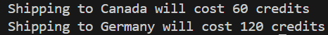
Завдання №2.Варіант 2
<script>
function makeTransaction(quantity, pricePerDroid, customerCredits) {
// Обчислення загальної суми замовлення
const totalPrice = quantity * pricePerDroid;
// Перевірка, чи вистачить коштів на рахунку
if (totalPrice > customerCredits) {
return "Insufficient funds!";
} else {
return `You ordered ${quantity} droids worth ${totalPrice} credits!`;
}
}
// Приклад виклику функції та виведення результату в консоль
console.log(makeTransaction(5, 300, 1500)); // Виведе: You ordered 5 droids worth 1500 credits!
console.log(makeTransaction(3, 400, 1000)); // Виведе: Insufficient funds!
</script>
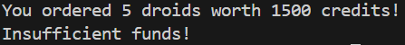
Завдання №3.Варіант 2
<script>
// Об'єднуємо обидва масиви
const combinedArray = firstArray.concat(secondArray);
// Якщо довжина об'єднаного масиву перевищує maxLength, повертаємо його копію з довжиною maxLength
if (combinedArray.length > maxLength) {
return combinedArray.slice(0, maxLength);
}
// Інакше повертаємо весь об'єднаний масив
return combinedArray;
}
// Приклад виклику функції та виведення результату в консоль
console.log(makeArray([1, 2, 3], [4, 5, 6], 5)); // Виведе: [1, 2, 3, 4, 5]
console.log(makeArray([1, 2], [3, 4, 5], 10)); // Виведе: [1, 2, 3, 4, 5]
</script>
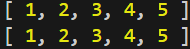
Завдання №4(1,2).Варіант 2
Підпункт 1
<script>
const readline = require('readline');
// Створюємо інтерфейс для зчитування вводу з терміналу
const rl = readline.createInterface({
input: process.stdin,
output: process.stdout
});
// Функція для отримання суми елементів з парними індексами
function sumEvenIndices(arr) {
let sum = 0;
for (let i = 0; i < arr.length; i++) {
if (i % 2 === 0) {
sum += arr[i];
}
}
return sum;
}
// Функція для знаходження максимального елемента та його індексу серед непарних індексів
function maxOddIndices(arr) {
let max = -Infinity;
let index = -1;
for (let i = 1; i < arr.length; i += 2) { // починаємо з індексу 1 для непарних
if (arr[i] > max) {
max = arr[i];
index = i;
}
}
return { max, index };
}
// Функція для знаходження мінімального елемента та його індексу серед непарних індексів
function minOddIndices(arr) {
let min = Infinity;
let index = -1;
for (let i = 1; i < arr.length; i += 2) { // починаємо з індексу 1 для непарних
if (arr[i] < min) {
min = arr[i];
index = i;
}
}
return { min, index };
}
// Отримуємо кількість елементів масиву від користувача через readline
rl.question('Введіть кількість елементів масиву: ', (size) => {
size = parseInt(size); // Перетворюємо введене значення в число
// Створення масиву з випадковими числами
let arr = [];
for (let i = 0; i < size; i++) {
arr.push(Math.floor(Math.random() * 100)); // Заповнення випадковими числами від 0 до 99
}
console.log("Масив:", arr);
// Використовуємо функції для обчислення результатів
let sum = sumEvenIndices(arr);
console.log("Сума елементів з парними індексами:", sum);
let maxOdd = maxOddIndices(arr);
console.log("Максимальний елемент серед непарних індексів:", maxOdd.max, "Індекс:", maxOdd.index);
let minOdd = minOddIndices(arr);
console.log("Мінімальний елемент серед непарних індексів:", minOdd.min, "Індекс:", minOdd.index);
// Закриваємо інтерфейс після завершення
rl.close();
});
</script>
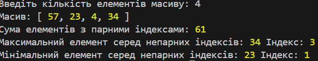
Підпункт 2
<script>
const readline = require('readline');
// Створюємо інтерфейс для зчитування вводу з терміналу
const rl = readline.createInterface({
input: process.stdin,
output: process.stdout
});
// Функція для сортування масиву у порядку зростання
function sortArray(arr) {
return arr.sort((a, b) => a - b); // Використовуємо метод sort() для сортування
}
// Функція для виведення масивів
function printArrays(inputArr, outputArr) {
console.log("Вхідний масив:", inputArr);
console.log("Вихідний масив (упорядкований):", outputArr);
}
// Отримуємо кількість елементів масиву від користувача через readline
rl.question('Введіть кількість елементів масиву: ', (size) => {
size = parseInt(size); // Перетворюємо введене значення в число
// Створення масиву з випадковими числами
let arr = [];
for (let i = 0; i < size; i++) {
arr.push(Math.floor(Math.random() * 100)); // Заповнення випадковими числами від 0 до 99
}
// Сортуємо масив у порядку зростання
let sortedArr = sortArray(arr);
// Виводимо вхідний та вихідний масиви
printArrays(arr, sortedArr);
// Закриваємо інтерфейс після завершення
rl.close();
});
</script>
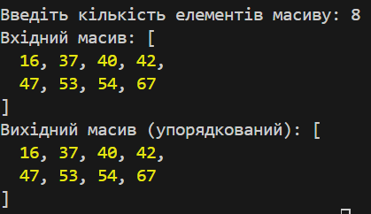
Завдання №5. Варіант 2
<!DOCTYPE html>
<html lang="en">
<head>
<meta charset="UTF-8">
<meta name="viewport" content="width=device-width, initial-scale=1.0">
<title>Багаторівневе меню</title>
<style>
/* Стилі для меню */
#menu-container {
margin: 20px 0;
padding: 10px;
}
/* Горизонтальне меню */
.horizontal-menu {
list-style-type: none;
display: flex;
padding: 0;
}
.horizontal-menu li {
margin-right: 20px;
font-size: 18px;
}
.horizontal-menu a {
text-decoration: none;
color: #333;
}
.horizontal-menu a:hover {
color: #007bff;
}
/* Вертикальне меню */
.vertical-menu {
list-style-type: none;
padding: 0;
}
.vertical-menu li {
margin: 10px 0;
font-size: 18px;
}
.vertical-menu a {
text-decoration: none;
color: #333;
}
.vertical-menu a:hover {
color: #007bff;
}
</style>
</head>
<body>
<div id="menu-container"></div>
<h1>Головна сторінка</h1>
<p>Тут можна додавати основний контент.</p>
<script>
// Масив пунктів меню
const menuItems = [
{ name: "Головна", link: "index.html" },
{ name: "Про нас", link: "about.html" },
{ name: "Послуги", link: "services.html" },
{ name: "Контакти", link: "contacts.html" }
];
// Функція для створення горизонтального меню
function createHorizontalMenu() {
const menuContainer = document.getElementById("menu-container");
const ul = document.createElement("ul");
ul.classList.add("horizontal-menu");
menuItems.forEach(item => {
const li = document.createElement("li");
const a = document.createElement("a");
a.href = item.link;
a.textContent = item.name;
li.appendChild(a);
ul.appendChild(li);
});
menuContainer.appendChild(ul);
}
// Функція для створення вертикального меню
function createVerticalMenu() {
const menuContainer = document.getElementById("menu-container");
const ul = document.createElement("ul");
ul.classList.add("vertical-menu");
menuItems.forEach(item => {
const li = document.createElement("li");
const a = document.createElement("a");
a.href = item.link;
a.textContent = item.name;
li.appendChild(a);
ul.appendChild(li);
});
menuContainer.appendChild(ul);
}
// Вибір меню: горизонтальне або вертикальне
createHorizontalMenu(); // Виклик для горизонтального меню
// createVerticalMenu(); // Щоб викликати вертикальне меню, треба замінити на цю лінію
</script>
</body>
</html>
Приклад 1
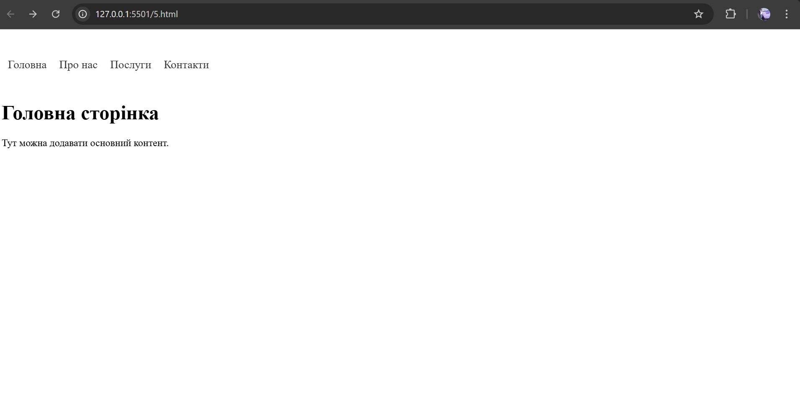
Приклад 2
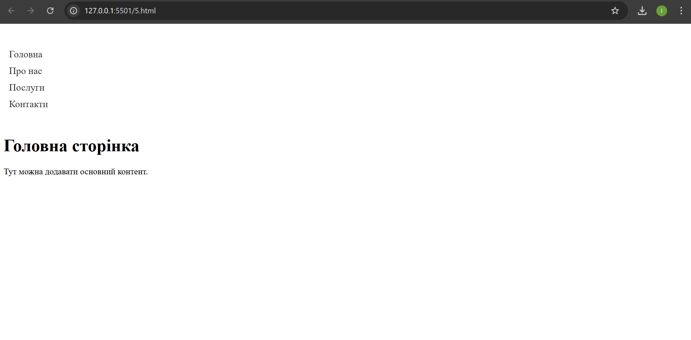
Приклад 3
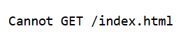
Приклад 4
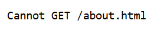
Приклад 5
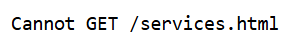
Приклад 6
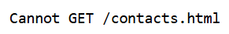
Висновки
Під час виконання лабораторної роботи були виконані кілька завдань для удосконалення навичок програмування на JavaScript та роботи з елементами HTML.
Ця лабораторна робота сприяла покращенню навичок перевірки введених даних та взаємодії з користувачем через веб-сторінки.
Тема:ОБ'ЄКТ. МЕТОДИ ОБ'ЄКТА. МАСИВ ОБ'ЄКТІВ. ДЕСТРУКТУРИЗАЦІЯ ОБ'ЄКТІВ. CALLBACK. СТРІЛОЧНІ ФУНКЦІЇ. СТРІЛОЧНІ ФУНКЦІЇ ЯК
КОЛБЕКИ.
Мета:придбати практичні навички роботи з об'єктами. Методи об'єкта.. Callback. Стрілочні функції. Стрілочні функції як
колбеки.Реалізація програм засовами мови JAVASCRIPT
Посилання на живу веб-сторінку
Посилання на веб-сторінку
Посилання на живу сторінку звітного HTML документа
Посилання на сторінку звітного HTML документа
Посилання на живу сторінку з самостійними роботами
Посилання на сторінку з самостійними роботами
Завдання 2
<function getProductDetails(productId, successCallback, errorCallback) {>
<!-- Імітація отримання даних про товар (наприклад, запит до API) -->
const products = [
{ id: 1, name: 'Товар 1', price: 100 },
{ id: 2, name: 'Товар 2', price: 200 },
{ id: 3, name: 'Товар 3', price: 300 }
];
<!-- Шукаємо товар за вказаним productId -->
const product = products.find(item => item.id === productId);
<!-- Якщо товар знайдений, викликаємо successCallback з даними товару -->
if (product) {
successCallback(product);
} else {
<!-- Якщо товар не знайдений, викликаємо errorCallback з повідомленням про помилку -->
errorCallback('Товар не знайдений');
}
}
<!-- Приклад використання функції: -->
getProductDetails(2,
(product) => {
console.log('Товар знайдений:', product);
},
(error) => {
console.error(error);
}
);
Завдання 4
<const concerts = {>
Київ: new Date("2020-04-01"),
Умань: new Date("2025-07-02"),
Вінниця: new Date("2020-04-21"),
Одеса: new Date("2025-03-15"),
Хмельницький: new Date("2020-04-18"),
Харків: new Date("2025-07-10"),
};
<const currentDate = new Date();>
<const upcomingCities = Object.entries(concerts)>
.filter(([city, date]) => date > currentDate) <!-- фільтруємо майбутні концерти -->
.sort((a, b) => a[1] - b[1]) <!-- сортуємо за датою концерту -->
.map(([city]) => city); <!-- беремо тільки міста -->
<console.log(upcomingCities);> <!-- Вивести результат -->
Завдання 6
<function applyDiscount(medicines) {>
return medicines.map((medicine, index) => {
let discountedPrice = medicine.price > 300 ? medicine.price * 0.7 : medicine.price;
return {
id: index + 1, <!-- додавання унікального ID -->
name: medicine.name,
price: discountedPrice
};
});
}
<const medicines = [>
{ name: "Noshpa", price: 170 },
{ name: "Analgin", price: 55 },
{ name: "Quanil", price: 310 },
{ name: "Alphacholine", price: 390 },
];
<const updatedMedicines = applyDiscount(medicines);>
<console.log(updatedMedicines);>
Завдання 8
< // Властивість для зберігання товарів >
this.items = initialItems;
< // Метод для отримання всіх товарів >
this.getItems = function() {
return this.items;
};
< // Метод для додавання нового товару >
this.addItems = function(item) {
this.items.push(item);
};
< // Метод для видалення товару >
this.removeItem = function(item) {
const index = this.items.indexOf(item);
if (index !== -1) {
this.items.splice(index, 1);
}
};
}
< // Приклад використання: >
const arr = ["apple", "banana", "mango"];
const storage = new Storage(arr);
< // Отримання товарів >
console.log(storage.getItems()); < // ["apple", "banana", "mango"] >
< // Додавання товару >
storage.addItems("orange");
console.log(storage.getItems()); < // ["apple", "banana", "mango", "orange"] >
< // Видалення товару >
storage.removeItem("banana");
console.log(storage.getItems()); < // ["apple", "mango", "orange"] >
Завдання 9
< const tweets = [ >
{ id: "000", likes: 5, tags: ["js", "nodejs"] },
{ id: "001", likes: 2, tags: ["html", "css"] },
{ id: "002", likes: 17, tags: ["html", "js", "nodejs"] },
{ id: "003", likes: 8, tags: ["css", "react"] },
{ id: "004", likes: 0, tags: ["js", "nodejs", "react"] },
];
< // Використовуємо reduce для обчислення кількості кожного тегу >
const tagCounts = tweets.reduce((acc, tweet) => {
< // Проходимо кожним тегом з масиву tags в кожному твітті >
tweet.tags.forEach(tag => {
< // Якщо тег вже є в об'єкті acc, збільшуємо його значення на 1 >
< // Якщо тег ще не був доданий, ініціалізуємо його значення як 1 >
acc[tag] = (acc[tag] || 0) + 1;
});
< // Повертаємо acc для наступного кроку редагування >
return acc;
}, {});
console.log(tagCounts); < // Виводимо результат >
Завдання 10
< // Перевірка правильності закриття дужок у рядку >
function checkBrackets(str) {
const stack = [];
const brackets = {
"(": ")",
"{": "}",
"[": "]",
};
for (const char of str) {
if (brackets[char]) {
stack.push(char); < // Відкриваюча дужка додається в стек >
} else if (Object.values(brackets).includes(char)) {
const last = stack.pop(); < // Порівнюємо зі стеком >
if (brackets[last] !== char) return false; < // Помилка, якщо дужки не збігаються >
}
}
return stack.length === 0; < // Перевіряємо, чи всі дужки закриті >
}
< // Приклад використання: >
console.log(checkBrackets("someFn({})")); < // true >
console.log(checkBrackets("someFn({[)]}")); < // false >
Висновки з лабораторної роботи
1. Робота з функціями та колбеками: Під час виконання завдання було освоєно використання функцій з колбеками. Це дозволяє створювати більш гнучкі програми, де одна функція може передавати результати іншій для подальшої обробки.
2. Маніпулювання об'єктами та масивами: Завдання допомогло покращити навички роботи з об'єктами та масивами, зокрема, за допомогою таких методів як map, filter, reduce і sort, які є важливими для обробки і трансформації даних у JavaScript.
3. Приватні властивості в класах: Ознайомлення з приватними властивостями в класах через символ # дозволило глибше зрозуміти концепцію інкапсуляції в ООП. Приватні властивості допомагають контролювати доступ до даних, що підвищує безпеку та підтримку коду.
4. Робота з датами: Завдання, пов'язане з медичними препаратами та їх термінами придатності, підкреслило важливість використання об'єктів типу Date для порівняння та маніпулювання датами.
5. Перевірка коректності структури рядка: Виконання завдання на перевірку правильності закриття дужок допомогло краще освоїти роботу з рядками та алгоритмами їх обробки в JavaScript.